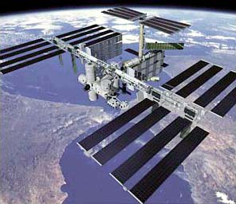

The International Space Station
|
 |
The International Space Station is an orbiting laboratory which is under construction by a global partnership of 16 nations. There are plans for six laboratory modules which will be constructed using supplies and personnel from about 40 spaceflights over five years. The first flight was lifted off by a Russian Proton rocket in November of 1998 and the Space Shuttle Endeavor launched from the U.S. in December 1998 with the unity module. |

Solar System Concepts
Solar System Exploration
Earth Satellites
| HyperPhysics********** Astrophysics | R Nave |